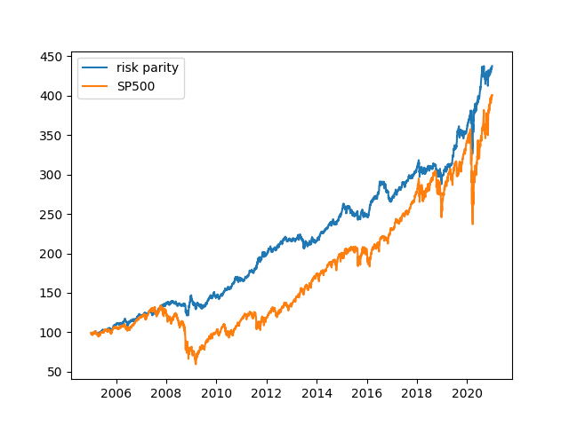

A Simple Portfolio For Lazy Investors


Introduction
One of the topics that is of main interest to me and (I believe) to lots of investors is: how to get the same returns on a certain portfolio, while lowering the risk. This is a difficult question that has a simple answer for investors that do not want to waste too much time on it: the answer is risk parity.
What is risk parity ?
There are different sorts of investors: the ones that like to take more risks than the market in exchange of a higher premium and the ones that are risk averse and prefer steady returns. Irrespective of your choices of risk, a large portion (if not all) of investors would like to optimize their returns with respect to the risks taken. But how to be sure that we are maximizing the Sharpe ratio of our portfolio, i.e. the ratio between return and risk?
Let me tell you a little secret: you can reach much higher returns than the market for the risk level of the market, by providing the same level of risk to parts of your portfolio that are uncorrelated. What do I mean? What we would like to have is each asset contributing in the same way to the overall portfolio volatility ($\sim$risk). To go a bit more into detail, let's define the volatility of the portfolio as : $$ \sigma(w) = \sqrt{w^\intercal \Sigma w} $$ where $w$ are the weight contributions of each asset to the overall portfolio and $\Sigma$ is the covariance matrix of the portfolio (see here for more details about the covariance matrix). The risk contribution of asset i is computed as follows: $$ \sigma_{i}(w) = w_i \times \partial_{w_i} \sigma(w). $$ You can then show that $$ \sigma(w) = \sum_{i=1}^n \sigma_i(w). $$ Marginal contributions are provided by $$ c(w)=\frac{\Sigma w}{\sqrt{w^\intercal \Sigma w}}. $$ Once we have defined all the atomic elements, it is pretty easy to understand that the solution is found by running an optimization: $$ \underset{w}{\mathrm{argmin}} \sum_{i=1}^N \left[\frac{\sqrt{w^\intercal \Sigma w}}{N} -w_i \cdot c(w)_i \right]^2 $$ This optimization allows to calculate the different proportions $w_i$ for each part of your portfolio such that the risk of each part is the same. Several papers (see [1] ) have shown that risk parity is rather close to the tangency portfolio, which is the optimum portfolio with risky assets that maximizes the Sharpe ratio based on the capital asset pricing model. This is under the assumption that the Sharpe ratios and correlations among all assets are similar.
Diversification is key
Having a risk parity portfolio is part of the equation, but you also need to consider the assets that you put into your portfolio. The main element here is diversification: you have to consider the assets that are not fully correlated between them such that, if there is a big drop in one part of your portfolio, say equities, the other parts do not suffer as much (and might even compensate for the equity loss).
The formula to understand diversification goes as follows and represents the risk of your portfolio based on the individual risk of the different assets constituting your portfolio.
$$ \sigma_p^2 = \sum_i^2 \sigma_i^2 + \sum_i \sum_{j} w_i w_j \sigma_i \sigma_j \rho_{ij} $$
The correlation between the different assets is represented through $\rho$. Let's try to understand this equation with two assets: if we have two assets with a 80/20 allocation, then the risk is not the sum of the risk contributions from each asset. The second term in the equation makes all the difference. Imagine now that your two assets are anticorrelated, which means that $\rho$ is negative. Then, the overall risk of your portfolio is lower than the risk contribution of both assets! So, we conclude that if we put two assets in our portfolio that are anticorrelated, then we reduce the risk of the overall portfolio.
All of that seems pretty easy. However, in reality it is not. For example, equities globally tend to become highly correlated during crisis (dynamics is not expressed in that static equation). However, if each element of your portfolio corresponds to an asset class, then there is chances you might get assets that do not correlate with equities broadly. One of those assets are bonds: they tend to be lower in risk than equities, but are also considered a safe heaven during major market crashes. Therefore bonds should be considered a diversification factor.
Another asset that might play a role is gold. During inflationary periods, bonds tend to lose money as they go with the inverse of the yield curve. However, gold does increase with inflation (one of its few advantages). Therefore, we should typically also consider gold in our portfolio. That is particularly relevant nowadays as inflationary expectations are growing. Other assets include real estate indexes, commodities and equities.
To construct your risk parity portfolio, you just have to put those assets into the optimizer previously discussed and you should be good to go.
A simple example
Instead of continuing in the conceptualization of the risk parity framework, we have decided to run a backtest of the strategy with three assets that are historically uncorrelated:
- Gold (symbol GLD)
- US Long-term treasuries (symbol TLT)
- US Equity market (proxy by SPY)

Figure 1. The risk parity portfolio is much less volatile than the overall SP500 even though the expected returns seem to be quite similar
We have backtested the risk parity strategy during 15 years, including the 2008 market crash and the coronavirus crash back in March 2020. What we do immediately see in the results of the backtest, presented in Figure 1, is twofold:
- The expected returns for SPY and the risk parity portfolio are somewhat similar;
- The volatility of the risk parity portfolio is much lower.
That seems extraordinary, but can be confirmed through the calculation of the Sharpe ratio $$ \text{SR} = \frac{\mathbb{E}(R_p)}{\sigma_p}, $$ which is, as already mentioned previously, the ratio between the expected returns of the portfolio $R_p$ and the volatility of the portfolio $\sigma_p$. Such calculation leads to the following results:
- SP500 Sharpe: 0.57
- RP portfolio Sharpe: 1.11
with both portfolios having a return of around 10%. That result is of fundamental importance, because it means that we can get the same returns (for long periods) as the overall market for half of the volatility, or reversely get the double of the returns with the same volatility as the SP500 if you consider leveraging your portfolio 2 times.
One comment that people might have is that the idea seems pretty simple, but why is it for lazy people ? It turns out that the calculation of the weights on the backtest was only done once per year and therefore the positions of the portfolio are just readjusted yearly (which also means that transaction costs are rather low and not considered here). This frequency can be optimized, but the end goal is really to have something that you let run without touching that much. As it is well known in portfolio management: better is the time in market, instead of timing the market.
All of this seems too good to be true. Don't take my word on it. Rather have a look at the video below, where Ray Dalio, one of the best hedge fund managers in the world, presents exactly the idea of diversification that we have previously discussed:
Of course, I'm not saying that you should put in place a portfolio based on what I just presented. Every individual that is putting his money at risk has the responsibility to study in full detail what is exactly happening.
In any case, to help you start on this, I've put the code on github that has been used to create the Figure 1.
Some final remarks
We have explored a little bit the concepts underlying the risk parity portfolios. As you might have seen, there is several benefits to the risk parity portfolios:
- you don't need to forecast long-term asset returns;
- they maximize the return/risk ratio, or Sharpe ratio, which leads to efficient portfolios
- they are based purely on risk diversification
As the name says, with risk parity you know by construction that each part of your portfolio has equal risks based on the historical view (both of the correlations and standard deviation of each asset class). However, some people do not feel at ease with that because it implies that a big chunk of the portfolio will ultimately end up in fixed income and this is problematic, because the bull market for bonds is basically over. Is that last conclusion true? I don't know, but that's their claim.
Not agreeing with the allocation that the risk parity provides to the fixed income part is perfectly legitimate. However, that does not invalidate the fact that it is extremely difficult to find a portfolio ex ante that is more efficient than risk parity , i.e. that has higher Sharpe ratio. That's due to the fact that even though bonds might not get good expected returns, the other parts of the portfolio will compensate for that lack. In fact, that is exactly what happened between 1940s to 1980s: bonds did poorly, but being aware of inflation risk allows you to add inflation sensitive assets, such as gold, commodities or inflation-linked bonds to your portfolio. Such assets would have mitigated the losses in bonds during that period in a risk parity portfolio.
I hope to have help you enter the world of risk parity portfolios and shed some light on their potential benefits.
If you would like to cite the present content, please use:
@article{fabio2021riskparity,
title = "A Simple Portfolio For Lazy Investors",
author = "Capela, Fabio",
journal = "capfab.io/blog",
year = "2021",
url = "https://capfab.io/blog/portfolio-for-lazy-investors"
}
References
[1] S. Maillard, T. Roncalli, J. Teiletche, On the properties of equally-weighted risk contributions portfolios
comments powered by Disqus